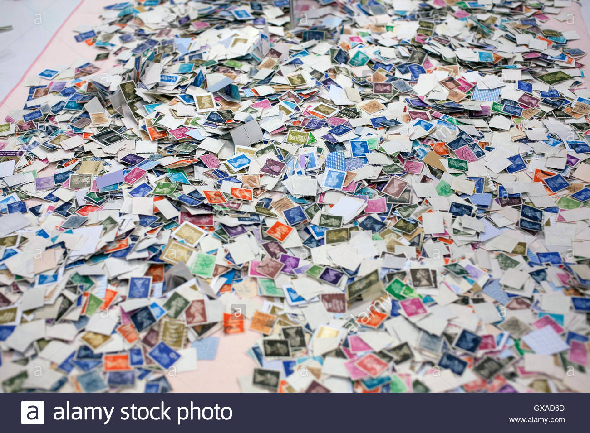

Buying Stamps
Buying stamps sometimes isn't as easy as it used to be. Years ago, I would go down to my neighborhood stamp store and spend countless hours talking to other collectors, looking at stamps, looking at stamp collections, and digging through boxes of yet un-inventoried goodies! In fact, within about 10 miles of where I lived at the time, there were several such stamp stores.
Today, the neighborhood stamp stores are gone, at least in the United States, so acquiring stamps is now something that must be done over the Internet, at local or regional stamp shows / bourses, through stamp clubs, and occasionally, at public stamp auctions.
Each venue for purchasing stamps has advantages AND disadvantages, but we have something today that small town collectors never had in the past. We have instant access to stamps and stamp collecting supplies, in every country on Earth.
It was the emergence of stamp collecting and dealing over the internet, in the late 1990's, that was a primary factor in putting the local stamp businesses and small-time bourse dealers out of business. The ones that adapted to buying and competitively selling stamps over the Internet, have survived. Most of the others are gone now.
Purchasing stamps and supplies online is fun, and can be very satisfying. It also has its dangers. Please click on the page links at the right for further information.
Since the late 1990's, I have bought almost ALL my stamps, collections, supplies, and even coins online. With the lack of retail outlets, it would have been very difficult to maintain my interest in stamp and coin collecting all this time. Everything you need is out there on the internet. As with indiscriminate retail store buying, it has its dangers. Just EDUCATE YOURSELF on your hobby, shop around for the best deals, find sellers with established reputations that you can trust, and it will become an enjoyable experience.
Return to Home Page from Buying Stamps


Buying Stamps
Page Links
Buying from Retail Stamp Dealers
Buying from Public Stamp Auctions
Buying from Online Stamp Auctions
Investing in Stamps
Tips for Insuring Your Stamp Collection
Rare Stamps and Individual Retirement Accounts - Approved Investments?
Rare Stamps - RARE is a Four-Letter-Word!
Search the Stamp Show Calendar at the A.P.S. Website
